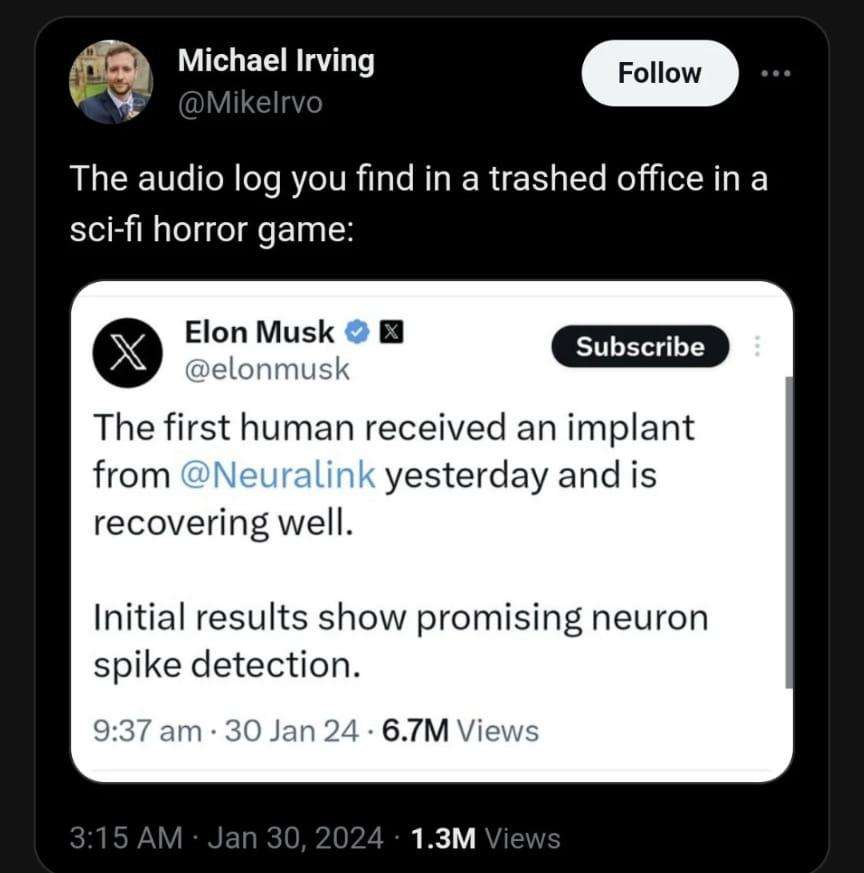

01/02/24
Comunews + Tecnologia e Classe
https://www.cnnbrasil.com.br/politica/pf-envia-nomes-de-monitorados-por-abin-paralela-para-pericia/
Bora botar um chip na cabeça?

Deepfakes da Taylor Swift
https://youtu.be/DFGgfXnE6qM?feature=shared&t=36
Elon Musk vai contratar moderadores para o twitter
Depois do fiasco e de toda a repercução do caso ligado à imagens falsas ofensivas da Taylor Swift na rede social, geradas com IA generativa, a empresa anunciou que abrirá 100 vagas para pessoas que trabalharão como moderadores na plataforma.
Faz o L
Governo vai investir 100 milhões de reais no desenvolvimento da indústria nacional de semicondutores: o valor faz parte da chamada pública “Finep Mais Inovação - Semicondutores” e visa apoiar áreas como design, fabricação, encapsulamento e testes. Apesar de significativo, o montante é modesto quando comparado aos investimentos globais, como os 53 bilhões de dólares planejados nos EUA, 44 bilhões na Europa e 41 bilhões na China. As informações são do site Convergência Digital.
Você sabe o que é Pânico Moral?
3:27
5:30
8:17
Visão sensata sobre o Pal
Aaron Swartz
https://jacobin.com.br/2023/01/o-guerrilheiro-do-conhecimento-livre/
Brasil registra redução de 60% nos acessos a sites piratas de filmes e séries nos últimos 5 anos: a pesquisa aponta que a queda pode estar relacionada a esforços de combate à pirataria, como a Operação 404, e ao crescimento de plataformas de streaming no país. A queda no acesso à pirataria no Brasil só fica atrás do Japão (-70%). O Canadá foi um destaque negativo, classificado como um “hotspot” de pirataria, com crescimento de 40% no acesso a conteúdo pirateado nos últimos anos. As informações são do site Tecnoblog.